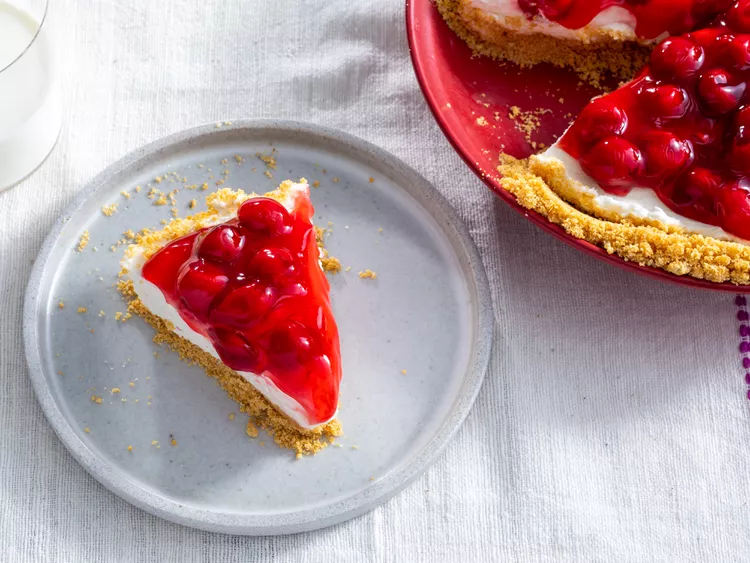

NO bake cherry cheesecake

Description
Ingredients
- 1 ¼ cups graham cracker crumbs
- ¼ cup unsalted butter, melted
- ¼ cup white sugar
- 1 (8 ounce) package cream cheese, softened
- 1 cup powdered sugar
- 1 teaspoon vanilla extract
- 1 cup heavy whipping cream
- 1 (12.5 ounce) can cherry pie filling
Steps
- To make the crust: Mix graham cracker crumbs, butter and sugar in a bowl until well incorporated and crumbly. Press mixture into a 9-inch pie plate, going up the sides as much as possible.
- To make the filling: Beat cream cheese, powdered sugar, and vanilla in a bowl with an electric mixer until smooth and spreadable.
- Beat cream in a chilled glass or metal bowl with an electric mixer until soft peaks form. Fold into cream cheese mixture until smooth.
- Pour filling into the prepared crust, and smooth the top with a spatula. Refrigerate until firm, about 2 to 3 hours.
- Spread cherry pie filling over the chilled cheesecake. Serve immediately or refrigerate until serving.